A few days ago I mistakenly
named Neal Stephenson as the author I'd read more of
than any other. But I was forgetting about being young and inhaling books.
On reflection, that title must surely belong to Larry Niven. As a teenager I
read every last thing he did - or at least everything I could find in my
hometown.
At one point my Mom picked up World Out of Time, to see what craziness her
son was always buried in, and she concluded over the dinner table that I was
reading it for the sex scenes she'd found. I presumably objected inarticulately
that I was so little interested in Larry Niven's brief nerdy depictions of
space sex that I'd barely even noticed they were there, but I have the
impression she wasn't convinced. But it really was was his brand of hard
science fiction that I was there for (I protest too much!) - revolving around
ideas rather than character arcs, and the ruthless application of consistent
world-views.
In inventing the Ringworld, Niven was inspired by Dyson spheres,
first described by Olaf Stapledon,
and popularized by Freeman Dyson.
A full, solid Dyson sphere was, in some regards, inefficient. Dyson postulated
miraculous gravity generators to make the inner surface of the sphere
habitable. But this can be achieved much more feasibly by simply spinning the
structure. However, all the matter inside the sphere, including any atmosphere,
then pools at the equator. Niven observed that the superfluous surface of the
sphere, away from the equator, can then be removed.
This vastly reduces the material needed to construct the megastructure.
Given miraculous elemental transmutation, one could easily gather enough
matter by recycling all the planets in a solar system as building material,
even with a 1,000km "wall" along each edge to keep the fringes of the
atmosphere in. Although this yields a much smaller habitable interior surface
area than a full sphere, it's still something like a million times larger than
planet Earth.
The aliens themselves weren't quite like any I've read before or since. The
creepy sessile but sentient Grogs. The mysterious Outsiders, information
brokers who are able to answer any question humanity has - if only we could
afford the prices. The warlike, carnivorous Kzinti (picture a species of
vicious, vaguely feline Chewbaccas - surely the inspiration for Wing
Commander's Kilrathi) forever attacking humanity before they were quite ready.
You can't help but almost feel sorry for them. By the times of Ringworld,
representatives such as Speaker to Animals (named for his shameful profession,
interfacing with humans) are sufficiently adapted to working alongside humans
to become formidable allies.
Perhaps Niven's greatest alien race was The Pierson's Puppeteers - like an
ostrich with two necks, each topped with a single eye and dexterous mouth,
while the brain resides safely in the body (pictured below, on the cover for
Neutron star). The body plan makes so much sense in action. Mobile eyes mean
they routinely view objects from both sides simultaneously, perfect for
close-up detailed work, using the hand-like mouths. Or, spread the necks wide
for amazing stereoscopic vision when distance estimation matters. And that
gestural laugh - eyes turned inward to briefly gaze into one another, observing
the self, no mirror required.
The psychology is also exquisite. Herbivores and herd-beasts, the Puppeteers
are inveterate cowards. No human has ever met a sane one - only their more
unstable individuals would venture out alone to run the risks of space travel
and meeting alien species. However, they are very intelligent, more so than
humans, and industrious, and devious. It becomes clear over the course of
the books that Puppeteers have selectively bred the Kzinti into constructive
docility by engineering the many human-kzin wars, and their plans for everyone
else are scarcely less manipulative.
Finally, my personal favorite was always the Pak. As alien as could be, and yet
they are us. On humanity's original home-world, long before introduction to
planet Earth, a symbiotic plant grows which young humans find uninteresting,
but in middle-age they develop a compulsion to binge on it. It activates genes
that provoke startling physiological and psychological changes, transforming
the human from a breeder, into a protector - stronger, and with large
joints for better leverage, with a tough wrinkled armour-like skin, much
smarter, with a second heart, and ruthlessly dedicated to just one goal -
protecting their own offspring. It is protectors who, it turns out many novels
later, originally built the Ringworld. The absence of the transforming plant,
which won't grow on Earth, means we grow without its benefits, leaving us with
inadequate hearts, joints that fail with age, and an old-aged descent into
feeble bodies and minds. Then, as the story begins, the first known
interstellar spaceship shows up at Earth, piloted by one protector, come to
rescue the failed colony, with a hold full of strange plant roots...
Wonders like these, from the novels and short stories set in his Known Space
universe kept me up at night, and shaped the way I thought. Although Niven's
writing had some mildly conservative tendencies, especially when under the
influence of his militaristic writing partner Jerry Pournelle, it is also
permeated with the necessity of a very liberal philosophy of non-judgemental
tolerance of other lifestyles, both alien and human, a philosophy made explicit
in one of Niven's Laws: "The only universal message in science fiction: There
exist minds that think as well as you do, but differently."
It's clear I wasn't the only one spellbound. Niven's ideas have been
influential throughout science fiction culture. Bank's Culture's Orbitals and
the understandably much rarer full Rings are clear descendants, as is the
eponymous megastructure/superweapon of the juggernaut Halo franchise, and
countless other imitators. Niven's meticulous hard-SF approach to fantasy in
The Magic Goes Away, and in particular his concept of the conservation of
mana, was an influence on Magic: The Gathering, as acknowledged in the card
Nevinyrral's Disk (Niven's name backwards), which uses magic to simultaneously
accelerate it's own spin, and to hold itself together, thus rapidly using up
all the mana in an area, rendering further magic unusable. Movies such as
Wall-E throw in sly nods - the Axiom is labelled in a passing graphic as using
a "General Dynamics Type Three Hull", which is a similar size and shape to
Niven's "General Products Number Three Hull".
For years I remember toting Niven's various doorstop 500 page novels to one
place or another, such as being forbidden from carrying one into the Houses of
Parliament viewing gallery. All the better that they usually had these crazy
great '70s covers, mostly by artist
Peter Andrew Jones,
from whom you can buy prints of some of them.
Collecting these today by Google image search, I see today that these funky
covers are relatively rare - the vast majority of Niven's sales were of
editions with far less interesting and less skillfully put together covers. So
I think it's appropriate to collect and celebrate them here.
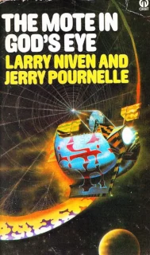
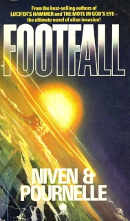
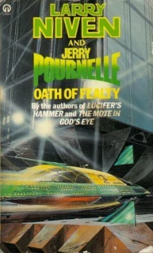
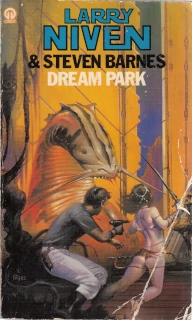
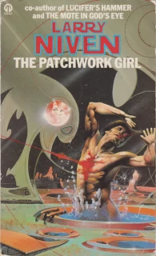
 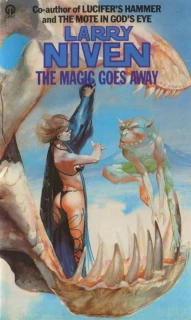
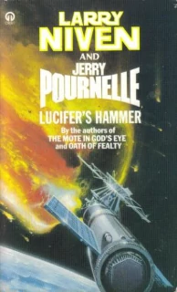
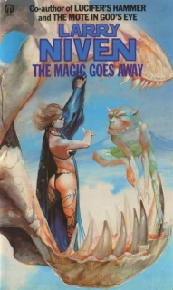
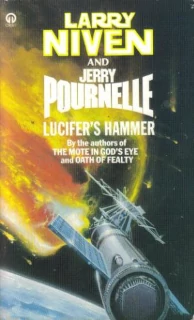
 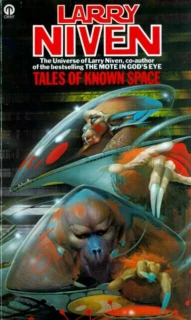
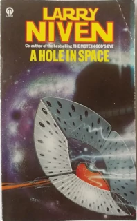
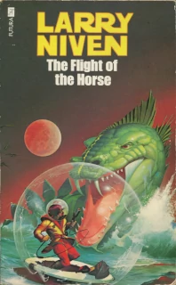
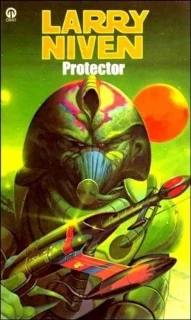
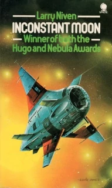
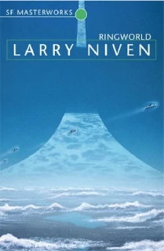
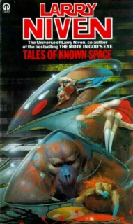
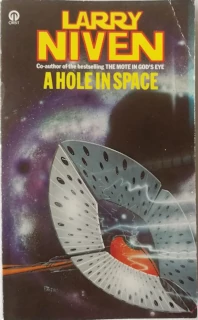
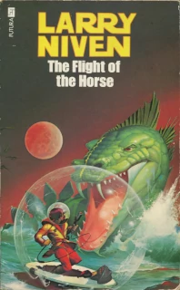
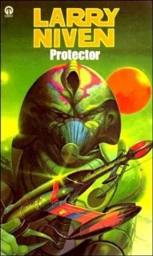
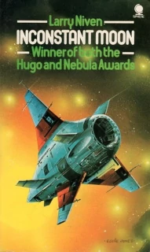
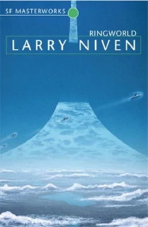
 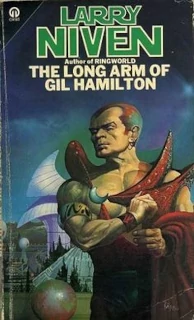
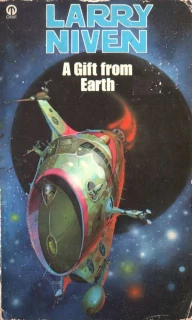
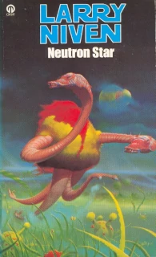
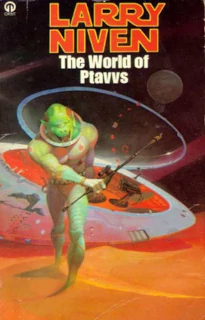
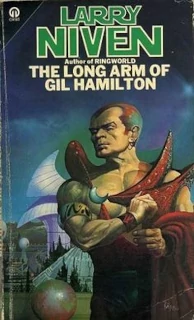
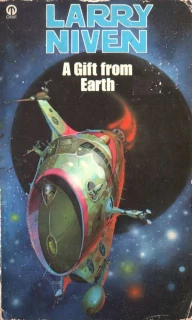
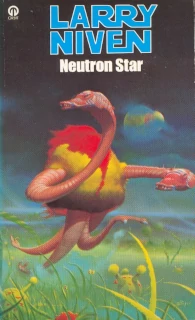
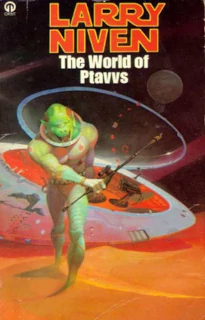
I've not even read half of what Niven wrote. By the '90s the crazy covers had
been replaced by more conservative designs, and at the same time I drifted away
to other things. At the time it felt more like Niven was drifting away from me,
evolving in style over the years, losing something hard-to-characterize that
I'd enjoyed, maybe just the rawness of his earlier works. Maybe his style was
diluted through him writing so many books as partnerships, or, as I
increasingly assumed, in an advisory role, lending his name to the cover for
younger, less well-known authors, who did most of the work.
Looking back on it, with 30-or-so year's hindsight, there are also
components of Niven's writing that are lacking, and I was slowly growing out of
it. Hard SF often celebrates the elevation of ideas over characters, and while
there is a value to that, particularly for those readers who are the most
vulnerable to the sensation of wonder, it also needlessly shuns other aspects,
like the emotional impact of character-driven drama or individual psychological
epiphany. A more skilled writer, I now think, would have a broader range of
tools to imbue the story with more emotional resonance and meaning.
Still, while the affair lasted, it was fabulous. Goodreads page counts
indicates it was eleven thousand pages, beating my Neal Stephenson consumption
by a clear thousand pages. Combining that with a very conservative estimate of
the number of times I re-read each one, nearly twenty five thousand pages. What
can I say, I was a teenager, with seemingly endless oceans of time.
The following are just his books that I've read. He has many others, especially
many that are more recent than these.
| Title |
Pages |
Times
read |
Effective
pages |
|
Rainbow Mars (1999) |
477 |
1 |
477 |
|
Destiny's Road (1997) |
448 |
1 |
448 |
|
The Ringworld Throne (1996) |
368 |
1 |
368 |
|
Beowulf's Children (1995) |
512 |
2 |
1,024 |
|
Flatlander (1995) |
369 |
1 |
369 |
|
Crashlander (1994) |
281 |
1 |
281 |
|
The Gripping Hand (1993) |
413 |
2 |
826 |
|
The Barsoom Project (1989) |
352 |
1 |
352 |
|
The Legacy of Heorot (1987) |
383 |
2 |
766 |
|
The Smoke Ring (1987) |
323 |
2 |
646 |
|
Footfall (1985) |
524 |
3 |
1,572 |
|
The Integral Trees (1983) |
272 |
2 |
544 |
|
Oath of Fealty (1981) |
324 |
2 |
648 |
|
Dream Park (1981) |
448 |
3 |
1,344 |
|
The Patchwork Girl (1980) |
205 |
2 |
410 |
|
The Ringworld Engineers (1979) |
307 |
2 |
614 |
|
Convergent Series (1979) |
227 |
2 |
454 |
|
The Magic Goes Away (1978) |
212 |
5 |
1,060 |
|
Lucifer's Hammer (1977) |
629 |
2 |
1,258 |
|
A World Out of Time (1976) |
246 |
3 |
738 |
|
Tales of Known Space (1975) |
240 |
5 |
1,200 |
|
The Mote in God's Eye (1974) |
596 |
3 |
1,788 |
|
A Hole in Space (1974) |
196 |
2 |
392 |
|
The Flight of the Horse (1973) |
212 |
5 |
1,060 |
|
Protector (1973) |
218 |
4 |
872 |
|
Inconstant Moon (1971) |
200 |
4 |
800 |
|
Ringworld (1970) |
228 |
2 |
456 |
|
N-Space (1969) |
693 |
1 |
693 |
|
The Long Arm of Gil Hamilton (1969) |
182 |
2 |
364 |
|
All the Myriad Ways (1968) |
181 |
2 |
362 |
|
A Gift from Earth (1968) |
256 |
3 |
768 |
|
Neutron Star (1966) |
285 |
4 |
1,140 |
|
The World of Ptavvs (1966) |
188 |
4 |
752 |
| totals |
10,995 |
|
24,842 |
(Discussion
on Damien Walter's Science Fiction Facebook group)